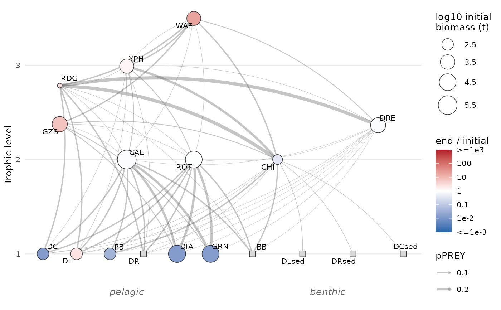
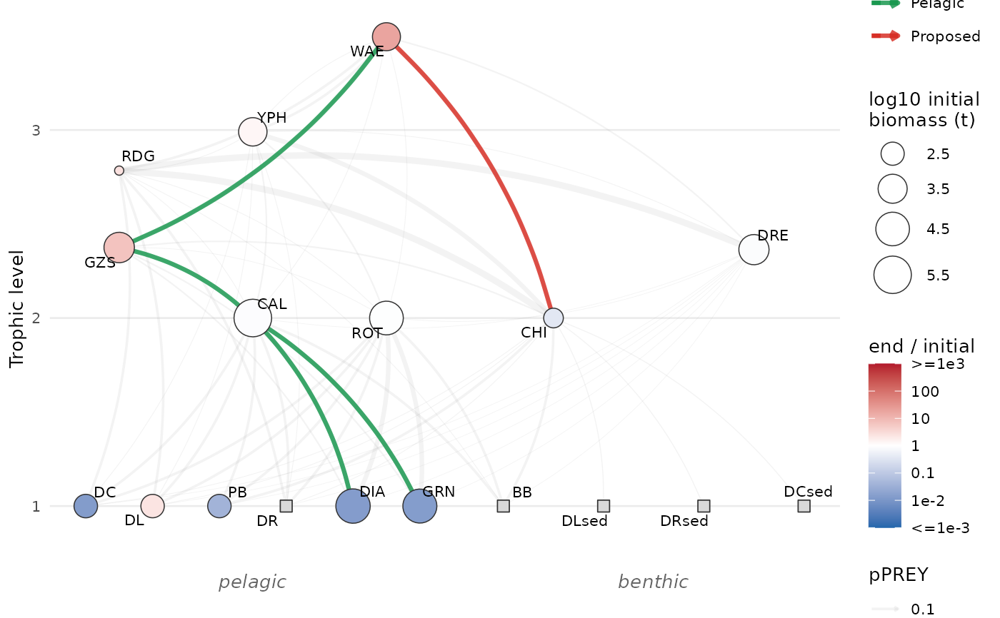
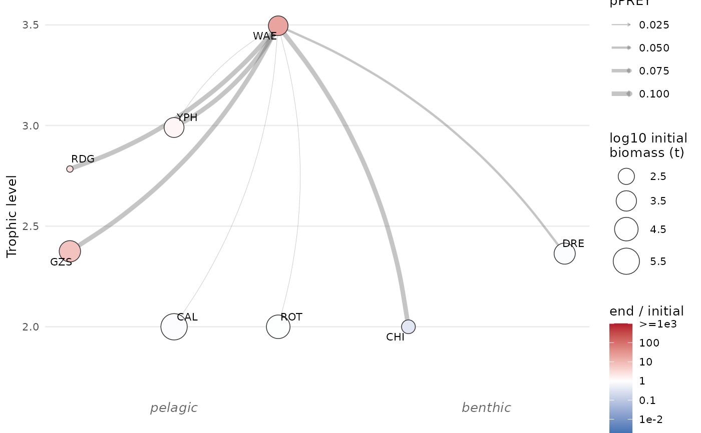

Draws the food web of a model from its diet table (see
create_diet_table()): nodes are the groups (and the detritus in the
sediment) placed by trophic level, edges go from prey to predator. Pathways
can be highlighted with a table of links and colours.
Arguments
- x
An
Atlantisobject with the biology and groups files loaded. If the system-wide biomass (outputBiomIndx.txt) is loaded, node size is the initial biomass and node colour the ratio of the final biomass (mean over the lastwindowdays) to the initial one.- highlight
A data frame of the links to highlight, with the columns
prey,predator(group codes) andcolour, and optionallypathway, the name of the pathway the link belongs to, shown in the legend. Links absent from the food web (e.g. proposed links) are drawn dashed.- x_position
A named vector of horizontal positions (names are group codes) that overrides the default layout, for some or all nodes.
- focus
A vector of group codes. If not
NULL, only these groups, the groups they interact with (their prey and predators) and the links involving them are drawn. Trophic levels are still computed from the whole food web.- window
Number of days at the end of the run used to compute the final biomass.
Details
Edge width is the largest pPREY value over the stages of prey and
predator. The trophic level of a group is 1 plus the mean of the trophic
levels of its prey, weighted by these values (cannibalism ignored); groups
without prey are at level 1. By default, pelagic groups are on the left and
benthic groups (benthos, sediment bacteria and detritus, benthic primary
producers) on the right, spread evenly within each trophic level.
Examples
my_model <- new_atlantis() |>
atlantis_load_files(
c(
system.file("examples", "inputs", "tiny_biol.prm", package = "atlantio"),
system.file("examples", "inputs", "tiny_groups.csv", package = "atlantio"),
system.file("examples", "outputs", "outputBiomIndx.txt", package = "atlantio")
)
)
plot_foodweb(my_model)

pathways <- data.frame(
prey = c("DIA", "GRN", "CAL", "GZS", "CHI"),
predator = c("CAL", "CAL", "GZS", "WAE", "WAE"),
colour = c("#1a9850", "#1a9850", "#1a9850", "#1a9850", "#d73027"),
pathway = c(rep("Pelagic", 4), "Proposed")
)
plot_foodweb(my_model, highlight = pathways)

# Walleye, its prey and its predators only
plot_foodweb(my_model, focus = "WAE")
